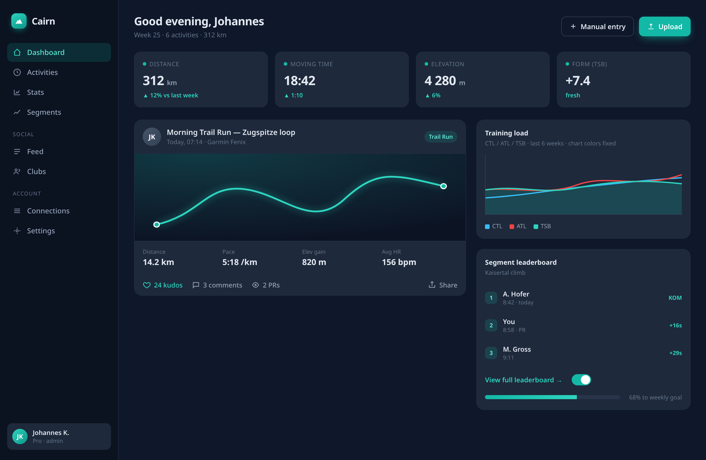

Cairn is a self-hosted, multi-source activity tracker. Pull from Strava, Garmin, file uploads and manual entry — then merge every source of the same workout, field by field, under rules you control.
No SaaS lock-in. No data sold. One Go binary serves the API and the web UI; provider workers run as separate processes.

Cairn started with a familiar frustration. Years of runs, rides and hikes — your heart rate, your routes, your progress — end up on platforms that treat them as their asset: gated behind logins, rationed through APIs, and increasingly reserved for whichever subscription tier you're willing to pay for this year.
The pattern rarely reverses. Prices climb, features you relied on move up a tier, the product slowly bends away from the people who use it — and switching means leaving your history behind. None of that is surprising anymore. It's just not how your own training story should work.
Cairn is the alternative: an open-source tracker that runs on your hardware. It imports your full history while the doors are open, keeps recording from any device or file you throw at it, and stores everything in a database you can query, back up and export at will. If a platform changes its terms tomorrow, your archive doesn't notice.
No gatekeeping. No tiers. No exit fees. Just your data, on your server.
Cairn ingests the same activity from multiple providers and merges it per-field under a policy you set. Your edits are always preserved.
Title from one source, GPS from another, power from a third — each field group resolves to the best source via a configurable priority list.
Strava & Garmin via per-user OAuth; GPX/TCX/FIT uploads; manual entry. Everything funnels through one ingest pipeline.
PostGIS segment matching with leaderboards and ranks, plus automatic best-effort and personal-record detection.
CTL / ATL / TSB computed from your full history — fitness, fatigue and form, on charts that stay yours.
Follow, feeds, profiles, kudos, comments, clubs and moderation — plus optional ActivityPub federation across instances.
Federation: betaStreams in TimescaleDB, raw blobs in your object store, export anytime. Self-hosted means self-owned.
Four ways in — and every one lands in the same ingest pipeline, so a file upload or manual entry merges exactly like a provider import.
| Source | Connection | What comes in |
|---|---|---|
| Strava | Per-user OAuth, webhook-driven sync | Activities, sensor streams, laps, segment efforts, photos |
| Garmin Connect | Per-user OAuth through the standalone Garmin worker | Activities with full sensor streams and laps |
| File upload | GPX, TCX and FIT files | Anything your device or another platform exports |
| Manual entry | Web form | The same first-class fields — no recording needed |
Distance, moving & elapsed time, elevation gain and loss, average & max speed, heart rate, power (average, max, normalized), cadence, temperature, calories, TSS & intensity factor, pool lengths & strokes.
GPS track, altitude, speed, heart rate, power, cadence, grade, temperature, left/right balance, torque effectiveness, pedal smoothness, vertical oscillation, ground contact time, stride length, respiration rate, core temperature.
Segments & leaderboards, best efforts, personal records, training load (CTL / ATL / TSB), laps, start-place geocoding, photos & attachments — across 18 sports with their disciplines.
Providers are standalone workers that speak a small proto + NATS contract, so a new platform never touches the core. These are next in line — ordered by demand, no dates promised.
Import via Polar AccessLink for the Vantage, Pacer and Grit X lines.
PlannedWatch and dive-computer workouts through the Suunto partner API.
PlannedPace, Apex and Vertix activities via the COROS training API.
PlannedRides and workouts from ELEMNT head units via the Wahoo Cloud API.
ExploringApple Watch workouts — likely via companion export, as there is no server-side API.
ExploringImplement the worker contract in any language and plug it in — the Python Garmin worker is the template.
ContributeAlso watching: Zwift, Fitbit, Whoop, Oura and komoot. Want one sooner? Open an issue — demand decides the order.
Cairn is an OAuth 2.1 authorization server, so native apps, third-party clients and AI agents all authenticate the same secure way — scoped to a single user.
# Point your agent at your Cairn instance mcp connect https://cairn.example/mcp # OAuth runs automatically (PKCE + DCR), # scoped read-only to your account: tools: - list_activities - get_activity - activity_stats - personal_records - profile
One distroless binary with the web UI embedded, Postgres + TimescaleDB + PostGIS, NATS, and the provider workers you want. Deploy with Docker Compose or the included Kubernetes manifests.
# Pull the core + the workers you use docker compose up -d # core → API + embedded web UI # strava worker (Go), garmin worker (Python) # each a separate, swappable process → open https://cairn.example
Hi, I'm Johannes Küber — sports enthusiast, programmer and security expert. When I'm not building software I'm usually out running, riding or in the mountains, which is exactly where all this data comes from.
A platform like this has lived on my own server in one form or another for years. I've built it, outgrown it and rewritten it several times — as watches changed, providers came and went, and my ideas about training data matured. In 2026 I decided the latest rewrite shouldn't stay private, and Cairn became open source under AGPL-3.0.
The security background shapes the project more than any feature list: OAuth 2.1 with PKCE-only flows, scoped tokens, and a single visibility choke-point for every read aren't add-ons — they're the foundation. Questions, ideas, or war stories about liberating your own data? Say hi at contact@opencairn.org.
Spin up Cairn on your own hardware and keep every workout for good.